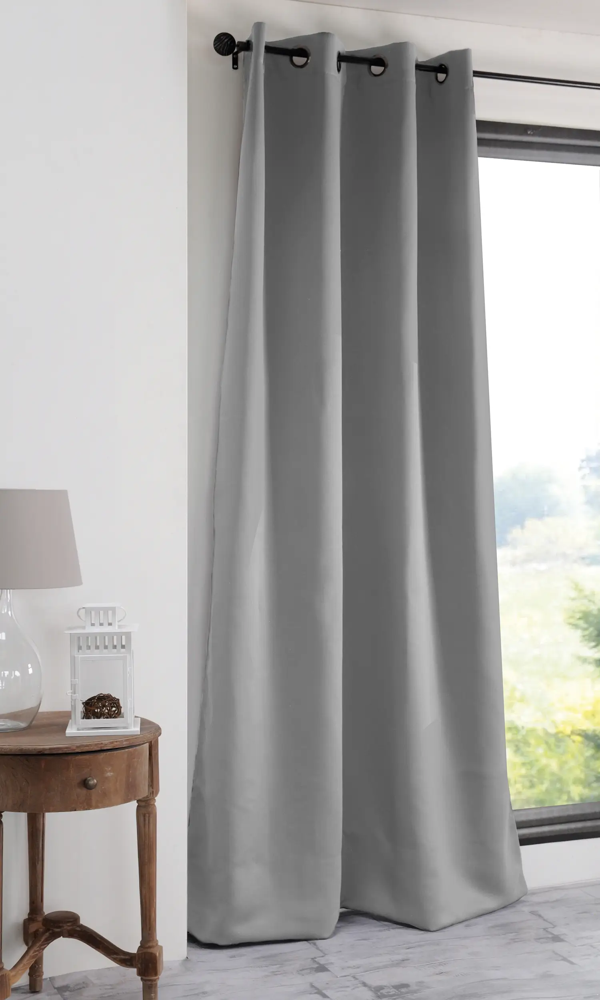

<!DOCTYPE html>
<html>
  <body>
    <style>
      .outside {
        background-color: bisque;
        height: 56px;
        display: flex;
        justify-content: space-between;
      }

      .inner1 {
        background-color: lightblue;
        width: 400px;
        flex-shrink: 0;
      }

      .inner2 {
        background-color: lightpink;
        flex: 1;
        display: flex;
        justify-content: center;
      }

      .inner3 {
        background-color: lightblue;
        width: 400px;
        flex-shrink: 0;
      }

      .inner4 {
  display: flex;
  justify-content: center;
  background-color: red;
  flex: 1; /* This allows inner4 to grow, shrink, and occupy available space */
  max-width: 300px; /* Optional: limits its width to 300px if space allows */
}

    </style>
  </body>
  <head>
    <div class="outside">
      <div class="inner1">
        1
      </div>
      <div class="inner2">
        <div class="inner4">
          2
        </div>
      </div>
      <div class="inner3">
        3
      </div>
    </div>
  </head>
</html>

<div class="my-day-main">
  <div class="picture-container">
    
  </div>
  <div class="create-story">
    <div class="create-story-text">
      Create story
    </div>
    <div class="cross">
      <div class="cross-text-outline">
        <div class="main-cross">
          &#43;
        </div>
      </div>
    </div>
  </div>
</div>
<div class="my-day-main">
  
</div>
<div class="my-day-main">
  
</div>
<div class="my-day-main">
  
</div>

.my-day {
  display: flex;
  width: 600px;
  overflow: hidden;
  margin-top: 16px;
  height: 250px;
  cursor: pointer;
  background-color: yellow;
  flex: 1;
}

.my-day::-webkit-scrollbar {
  display: none;
}

.my-day-main {
  background-color: lightpink;
  height: 100%;
  width: 138px;
  flex-shrink: 0;
  margin-right: 8px;
  border-radius: 10px;  
  overflow: hidden;
  display: flex;
  flex-direction: column;
}

.picture-container {
  height: 200px;
  width: 100%;
  background-color: lightgreen;
  display: flex;
  justify-content: center;
  align-items: center;
  overflow: hidden;
}

.picture-container img {
  width: 150px;
}

.create-story {
  flex: 1;
  background-color: white;
  display: flex;
  justify-content: center;
  position: relative;
}

.create-story-text {
  margin-top: 22px;
  font-size: 14px;
  font-weight: 500;
}

.cross {
  background-color: white;
  height: 44px;
  width: 44px;
  position: absolute;
  display: flex;
  justify-content: center;
  align-items: center;
  color: white;
  border-radius: 22px;
  bottom: 30px;
}

.cross-text-outline {
  height: 30px;
  width: 30px;
  display: flex;
  justify-content: center;
  align-items: center;
  background-color: rgb(56, 88, 152);
  border-radius: 15px;
}

.main-cross {
  width: 30px;
  height: 30px;
  font-size: 20px;
  font-weight: 700;
  text-align: center;
}